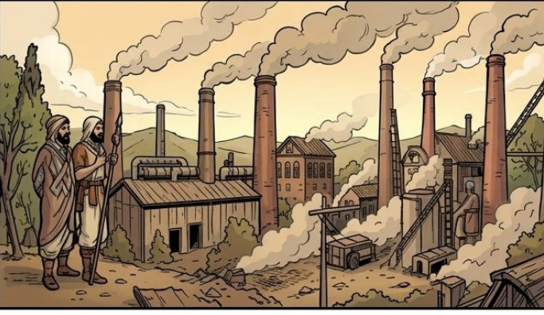

Module 1 — Cơ sở hạ tầng
Cái cũ còn sót, cái mới đang lên
Trong một xã hội luôn tồn tại đan xen ba loại quan hệ sản xuất: thống trị chi phối toàn bộ đời sống kinh tế, tàn dư còn sót lại từ xã hội cũ, và mầm mống đang hình thành cho xã hội tương lai.